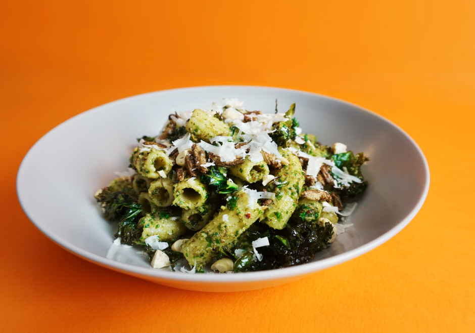

Cricket & Kale Pesto Rigatoni

Kale is a genuine superfood which makes the perfect switch for basil in
this pesto recipe. Combine that with the high protein from the crickets
and the healthy oils in the cashew nuts and this becomes so much more than
just a tasty bowl of pasta.
INGREDIENTS
- Ready to Cook Dried Crickets - 30g
- Cashews - 60g
- Chilli Flakes - 2g
- Lemon Salt - 2g
- Rigatoni Pasta - 200g
- Parmesan - 40g
- Garlic - 1/2 clove
- Kale - 125g
- Lemon Juice - 1/2 lemon
- Olive Oil - 100ml
METHOD
- ROAST CRICKETS & KALE | 10-15 mins
- Pre-heat oven to 170C/150C fan/gas 3.
-
Lightly crush the cashews and spread with crickets onto a baking tray.
Roast for 5 minutes.
-
In a bowl add a handful of kale, a tbsp of olive oil and a pinch of
lemon salt and pepper seasoning to taste. Mix well and spread onto
another baking tray. Bake in the oven for 5 - 10 minutes or until
crispy.
- BOIL PASTA & BLITZ PESTO | 12 mins
- Bring a pan of water to the boil, cook the pasta for 10-12
-
Whilst the pasta is boiling, using a food processor blend raw
unroasted kale, olive oil, parmesan, lemon juice, garlic, blackpepper,
lemon salt, chilli flakes (to taste), and most of the roasted crickets
and cashew nuts saving some for garnish later. Blend well until the
mix is smooth and pesto-y.
- MIX PESTO & PASTA | 5mins
- Once the pasta is cooked drain and add back to the pan.
- Spoon in the pesto and stir it together well.
- SERVE & GARNISH | 3mins
-
Spoon the pasta into bowls and garnish with the crispy kale and
remaining cricket and cashews.
- Grate a little parmesan over the top and dig in!